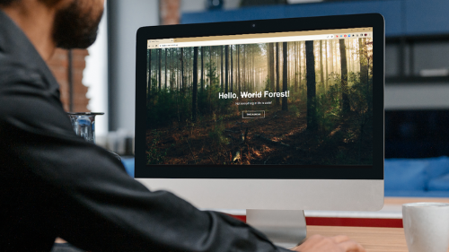
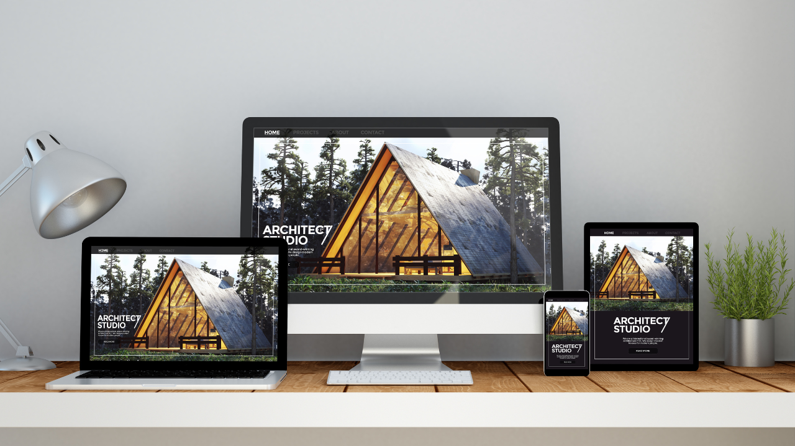
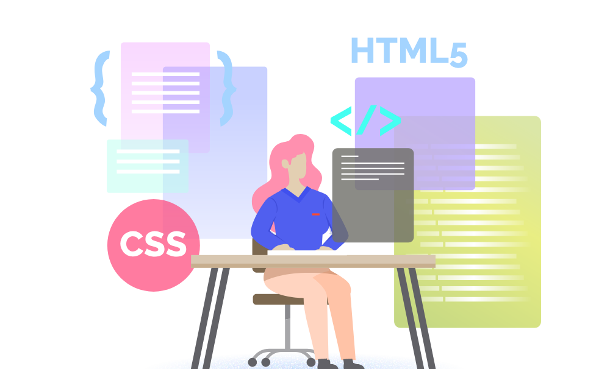

Mis proyectos recientes
Estos son algunos proyectos que he creado recientemente...





Soy estudiante de décimo ciclo de Ingeniería Industrial en la Universidad Peruana de Ciencias Aplicadas con formación complementaria en diseño UX/UI y análisis de datos. Además, soy parte del programa Tecnolochicas PRO, donde me estoy capacitando en Desarrollo Web Front-End. Busco desenvolverme en organizaciones tecnológicas, específicamente en las áreas de Project Management y Product Ownership. Me encanta leer, aprender nuevos idiomas, tomar fotografías y ver películas.
Diseño UX/UI
Diseño experiencias para productos digitales, combinando estética y funcionalidad.
Desarrollo Web
Desarrollo sitios web interactivos, optimizados y visualmente atractivos para una navegación óptima.
Análisis de datos
Analizo datos para extraer insights y apoyar decisiones basadas en información relevante.

